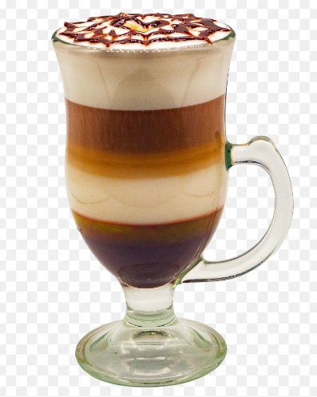

MOKA
CCINO
¿Cuál es la diferencia entre Mocachino y capuchino?
Aunque en ambos se usa espresso como base y la leche y su espuma, el mocachino lleva chocolate, bien sea en jarabe o chocolate con leche en polvo mezclado con el espresso o la leche. Como contiene chocolate, en los últimos años se lo toma como una especie de postre al que se le agrega crema batida encima. EL mokaccino se sirve en las tazas grandes de café, tal como si fuera un café con leche, pero ya se ha hecho costumbre que lo sirvan en vasos transparentes para ver el degradé de leche y café. Existen hoy muchas versiones: algunos le ponen malvaviscos en vez de crema, y la crema se complementa con lluvia o ralladura de chocolate, canela en polvo o nuez moscada.
¿Por qué se llama mocachino o moka?
La palabra proviene de Moka, ciudad en Yemen, conocida por su producción de café. Lo que no está claro es dónde o cuándo se originó la bebida. En los archivos del diccionario de Oxford, se señala que podría haber sidod un helado lo que antecedió a la bebida caliente, ya que existen registros de la reseña en un periódico de 1971, de una heladería neoyorquina que ofrecía un innovador sabor café y chocolate, llamado mocachino.
Preparación de un mokaccino
- Calienta leche.
- Vaporiza la mitad de la leche.
- Añade a la leche no vaporizada una cucharada de sirope de chocolate y mézclalo.
- Prepara un espresso en una taza grande.
- Echa la leche de cacao en el espresso.
- Cubre el café y el cacao con la espuma de leche.
- Espolvorea la espuma con cacao en polvo o sirope de chocolate.